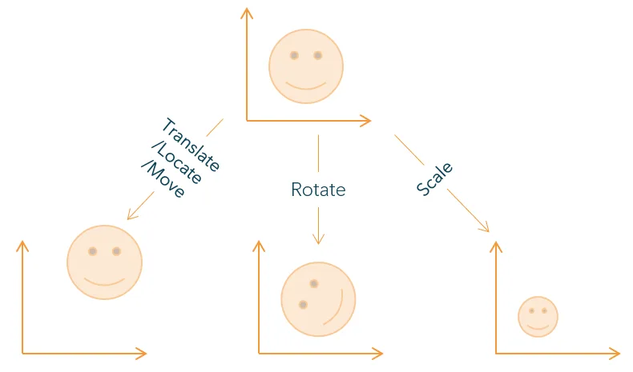
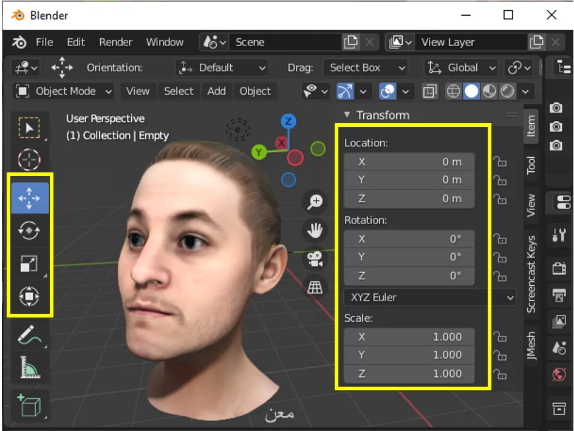
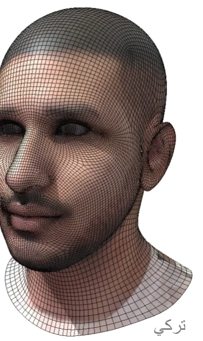
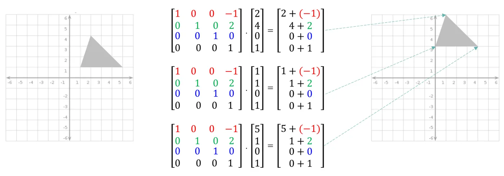
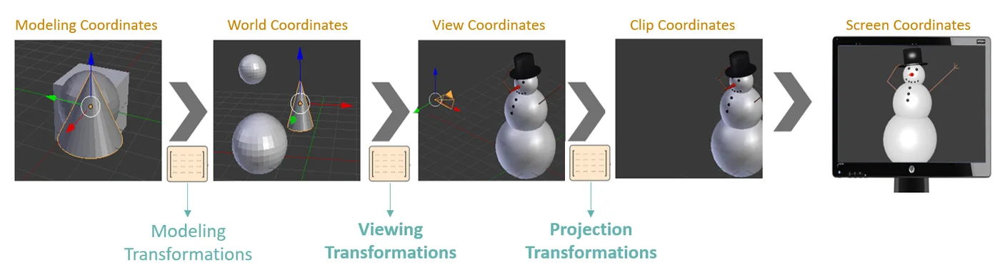

IT 280 · Computer Graphics and Multimedia · Week 9
Transformations and hierarchies
The mathematics behind moving, turning and resizing 3D objects: homogeneous coordinates, 4 × 4 matrices, why order matters, pivots, and parent–child hierarchies.
After this week you can
- Apply translation, rotation and scaling to points in 2D and 3D.
- Explain homogeneous coordinates and write the 4 × 4 transformation matrices.
- Combine transforms in the correct order and predict the effect of changing it.
- Rotate or scale about a pivot point and set object origins.
- Build and reason about parent–child hierarchies.
- Inspect and use model matrices in Blender, Unity and OpenGL code.
بعد هذا الأسبوع ستكون قادرًا على أن:
- تطبّق الإزاحة والدوران والتحجيم على النقاط في البعدين والأبعاد الثلاثة.
- تشرح الإحداثيات المتجانسة، وتكتب مصفوفات التحويل 4 × 4.
- تركّب التحويلات بالترتيب الصحيح، وتتنبأ بأثر تغيير الترتيب.
- تدير جسمًا أو تحجّمه حول نقطة ارتكاز، وتضبط نقاط أصل الأجسام.
- تبني تسلسلات هرمية من الآباء والأبناء وتستدل بها.
- تفحص مصفوفات النموذج وتستخدمها في Blender وUnity وشيفرة OpenGL.
ترجمة عربية مساندة للشرح. المرجع هو النص الإنجليزي، وهو لغة الاختبارات والبرامج.
01 · Transformations
Moving, turning and resizing objects
في الأسبوع الماضي انتقل كل رأس من فضاء النموذج إلى فضاء العالم عبر تحويل النموذج. وهذا التحويل مبني من ثلاث عمليات أساسية، هي نفسها التي استخدمتها في Blender بالمفاتيح G وR وS:
- الإزاحة (translation) تحرّك كل نقطة بالإزاحة نفسها: «مترين إلى اليمين».
- الدوران (rotation) يدير النقاط حول محور يمرّ بنقطة الأصل بزاوية معيّنة.
- التحجيم (scaling) يضرب الإحداثيات في معاملات على كل محور: «أطول بمرتين». والمعاملات المتساوية تحافظ على الشكل (تحجيم منتظم)؛ والمختلفة تمطّه.
والتحويلات تفعل أكثر بكثير من وضع النماذج. فالتحريك (الأسبوع السابع) تحويلات بإطارات مفتاحية؛ والغابة نموذج شجرة واحد يُرسم مرات كثيرة بتحويلات مختلفة (الاستنساخ instancing)؛ والكاميرا نفسها توضع بتحويل (الأسبوع 10). وتطبّقها GPU على ملايين الرؤوس في كل إطار، فيجب أن تكون سريعة وقابلة للتركيب. والمصفوفات تجعلها كذلك.
تحقّق من فهمك: لعبة ترسم 500 صندوق متطابق في أماكن مختلفة. لماذا لا تحتاج إلى 500 نموذج صندوق؟
الإجابة: تخزّن شبكة واحدة و500 تحويل نموذج. وكل رسم (أو رسم استنساخي واحد) يطبّق تحويلًا مختلفًا على الرؤوس نفسها.
ترجمة عربية مساندة للشرح. المرجع هو النص الإنجليزي، وهو لغة الاختبارات والبرامج.
Last week every vertex travelled from model space to world space through a model transform. That transform is built from three basic operations, the same three you used in Blender with G, R and S:
- Translation moves every point by the same offset: “2 m to the right”.
- Rotation turns points around an axis through the origin by an angle.
- Scaling multiplies coordinates by factors along each axis: “twice as tall”. Equal factors keep the shape (uniform scaling); different factors stretch it.
Transformations do far more than place models. Animation (Week 7) is keyframed transformations; a forest is one tree model drawn many times with different transforms (instancing); the camera itself is placed with a transformation (Week 10). The GPU applies them to millions of vertices per frame, so they must be fast and combinable. Matrices make them both.



A game draws 500 identical crates in different places. Why does it not need 500 crate models?
It stores one mesh and 500 model transforms. Each draw (or one instanced draw) applies a different transform to the same vertices.
02 · In 2D first
The three transforms as equations
ابدأ في البعدين، حيث النقطة (x, y).
- الإزاحة بـ(tx, ty): x′ = x + tx, y′ = y + ty
- التحجيم بـ(sx, sy) حول نقطة الأصل: x′ = sx · x, y′ = sy · y
- الدوران بزاوية θ عكس عقارب الساعة حول نقطة الأصل: x′ = x cos θ − y sin θ, y′ = x sin θ + y cos θ
تحقّق من الدوران بحالة بسيطة: تدوير (1, 0) بزاوية 90° يعطي (cos 90°, sin 90°) = (0, 1)، أي ربع دورة عكس عقارب الساعة كما هو متوقّع.
ولاحظ عبارة «حول نقطة الأصل». فالتحجيم والدوران يحدثان دائمًا حول النقطة (0, 0). والجسم البعيد عن الأصل يتأرجح حوله عند تدويره بدل أن يدور في مكانه. ويبيّن القسم 06 كيف تدير حول أي نقطة.
مثال محلول · تدوير نقطة بزاوية 30°
- النقطة (4, 0)؛ cos 30° ≈ 0.866، sin 30° = 0.5.
- x′ = 4 × 0.866 − 0 × 0.5 = 3.464.
- y′ = 4 × 0.5 + 0 × 0.866 = 2.
- تنتقل النقطة إلى (3.46, 2): ما زالت على بعد 4 وحدات من الأصل، والآن بزاوية 30° فوق المحور x.
ترجمة عربية مساندة للشرح. المرجع هو النص الإنجليزي، وهو لغة الاختبارات والبرامج.
Start in 2D, where a point is (x, y).
- Translate by (tx, ty): x′ = x + tx, y′ = y + ty
- Scale by (sx, sy) about the origin: x′ = sx · x, y′ = sy · y
- Rotate by angle θ anticlockwise about the origin: x′ = x cos θ − y sin θ, y′ = x sin θ + y cos θ
Check the rotation with a simple case: rotating (1, 0) by 90° gives (cos 90°, sin 90°) = (0, 1), a quarter turn anticlockwise, as expected.
Note the phrase “about the origin”. Scaling and rotation always happen around the point (0, 0). An object far from the origin, when rotated, swings around the origin rather than spinning in place. Section 06 shows how to rotate about any point.
Worked example · rotate a point by 30°
- Point (4, 0); cos 30° ≈ 0.866, sin 30° = 0.5.
- x′ = 4 × 0.866 − 0 × 0.5 = 3.464.
- y′ = 4 × 0.5 + 0 × 0.866 = 2.
- The point moves to (3.46, 2): still 4 units from the origin, now 30° above the x-axis.
03 · Homogeneous coordinates
Why graphics uses an extra coordinate
يمكن كتابة التحجيم والدوران مصفوفةً 2 × 2 تضرب النقطة. لكن الإزاحة تضيف ثابتًا، والمصفوفة 2 × 2 لا تستطيع إلا ضرب الإحداثيات نفسها وجمعها، ولا تضيف مقدارًا ثابتًا أبدًا. فيصبح لدينا نوعان من العمليات لا يمكن جمعهما في عملية واحدة.
والحل هو الإحداثيات المتجانسة (homogeneous coordinates): أضف إحداثيًا آخر w يساوي 1 للنقاط. فتصبح النقطة الثنائية (x, y, 1)، وتصبح التحويلات مصفوفات 3 × 3. والعمود الإضافي يحمل الآن الإزاحة (المصفوفتان في النص الإنجليزي).
اضرب مصفوفة الإزاحة في (x, y, 1) فيعطي الصف الأول 1·x + 0·y + tx·1 = x + tx: فالرقم 1 في النقطة يلتقط الإزاحة. فكل تحويل الآن مصفوفة، وأي سلسلة منها يمكن ضربها معًا في مصفوفة واحدة.
وفي الأبعاد الثلاثة تعطي الحيلة نفسها مصفوفات 4 × 4 ونقاطًا (x, y, z, 1). أما الاتجاهات، مثل المتجهات العمودية، فتستخدم w = 0، فلا تؤثر فيها الإزاحة: تحريك جدار لا يغيّر الاتجاه الذي يواجهه. وهذا تمامًا ما يعنيه vec4(aPos, 1.0) في مظلِّل الرؤوس في الأسبوع الماضي.
الإحداثيات المتجانسة تتيح لمصفوفة 4 × 4 واحدة أن تحمل أي مزيج من الإزاحة والدوران والتحجيم، ولهذا تخزّن كل واجهات الأبعاد الثلاثة ومحرّكاتها التحويلات مصفوفاتٍ 4 × 4.
ترجمة عربية مساندة للشرح. المرجع هو النص الإنجليزي، وهو لغة الاختبارات والبرامج.
Scaling and rotation can be written as a 2 × 2 matrix multiplying the point. But translation adds a constant, and a 2 × 2 matrix can only multiply and add the coordinates themselves, never add a fixed amount. We would have two kinds of operation that cannot be combined into one.
The solution is homogeneous coordinates: add one more coordinate, w, set to 1 for points. A 2D point becomes (x, y, 1) and transforms become 3 × 3 matrices. The extra column now carries the translation:
| 1 | 0 | tx |
| 0 | 1 | ty |
| 0 | 0 | 1 |
| cos θ | −sin θ | 0 |
| sin θ | cos θ | 0 |
| 0 | 0 | 1 |
Multiply the translation matrix by (x, y, 1) and the first row gives 1·x + 0·y + tx·1 = x + tx: the “1” in the point picks up the translation. Every transform is now a matrix, and any sequence of them can be multiplied together into a single matrix.
In 3D the same trick gives 4 × 4 matrices and points (x, y, z, 1). Directions, such as normals, use w = 0, so translation does not affect them: moving a wall does not change which way it faces. This is exactly the vec4(aPos, 1.0) in last week’s vertex shader.
Homogeneous coordinates let one 4 × 4 matrix hold any combination of translation, rotation and scaling, which is why every 3D API and engine stores transforms as 4 × 4 matrices.
04 · 3D matrices
The 4 × 4 matrices in 3D
في الأبعاد الثلاثة تُكتب مصفوفة الإزاحة بـ(tx, ty, tz) ومصفوفة التحجيم بـ(sx, sy, sz) كما في النص الإنجليزي. والدوران يحتاج إلى محور: الدوران حول المحور z هو الدوران الثنائي مع بقاء z دون تغيير؛ والدوران حول x وy يتبع النمط نفسه في الإحداثيين الآخرين.
والمصفوفة التي قطرها آحاد وبقيتها أصفار هي مصفوفة الوحدة (identity matrix): لا تغيّر شيئًا، وهي تحويل جسم لم يُحرَّك.
الاصطلاح. تكتب OpenGL ومكتبة الرياضيات GLM ومعظم الكتب النقاطَ متجهات عمودية (column vectors) وتضربها والمصفوفة على اليسار: v′ = M · v. وبعض المصادر (ومنها شريحة في ملاحظات CPIT285 القديمة) تكتب متجهات صفّية v′ = v · M، وهذا يحتاج إلى المصفوفة المنقولة. والطريقتان صحيحتان لكن لا يجوز خلطهما. ويستخدم هذا المقرر M · v في كل مكان.
مثال محلول · إزاحة مثلث (من ملاحظات CPIT285)
- الرؤوس (1, 1, 0) و(2, 4, 0) و(5, 1, 0)؛ والإزاحة (−1, 2, 0).
- T · (2, 4, 0, 1): الصف 1 = 2 + (−1) = 1؛ الصف 2 = 4 + 2 = 6؛ الصف 3 = 0؛ الصف 4 = 1 ← (1, 6, 0).
- وبالمثل (1, 1, 0) → (0, 3, 0) و(5, 1, 0) → (4, 3, 0).
- في الشيفرة القديمة كان هذا glTranslatef(−1, 2, 0)؛ وفي OpenGL الحديثة تبني T بمكتبة GLM وترسلها إلى مظلِّل الرؤوس (القسم 09).
ترجمة عربية مساندة للشرح. المرجع هو النص الإنجليزي، وهو لغة الاختبارات والبرامج.
In 3D, translation by (tx, ty, tz) and scaling by (sx, sy, sz) are:
| 1 | 0 | 0 | tx |
| 0 | 1 | 0 | ty |
| 0 | 0 | 1 | tz |
| 0 | 0 | 0 | 1 |
| sx | 0 | 0 | 0 |
| 0 | sy | 0 | 0 |
| 0 | 0 | sz | 0 |
| 0 | 0 | 0 | 1 |
Rotation needs an axis. Rotating about the z-axis is the 2D rotation with z left unchanged; rotations about x and y follow the same pattern in the other two coordinates:
| cos θ | −sin θ | 0 | 0 |
| sin θ | cos θ | 0 | 0 |
| 0 | 0 | 1 | 0 |
| 0 | 0 | 0 | 1 |
| 1 | 0 | 0 | 0 |
| 0 | cos θ | −sin θ | 0 |
| 0 | sin θ | cos θ | 0 |
| 0 | 0 | 0 | 1 |
A matrix with ones on the diagonal and zeros elsewhere is the identity matrix: it changes nothing, the transform of an object that has not been moved.
Convention. OpenGL, the GLM maths library and most textbooks write points as column vectors and multiply with the matrix on the left: v′ = M · v. Some sources (and one slide in the old CPIT285 notes) write row vectors, v′ = v · M, which needs the transposed matrix. Both work, but they must not be mixed. This course uses M · v throughout.
Worked example · translate a triangle (from the CPIT285 notes)
- Vertices (1, 1, 0), (2, 4, 0), (5, 1, 0); translate by (−1, 2, 0).
- T · (2, 4, 0, 1): row 1 = 2 + (−1) = 1; row 2 = 4 + 2 = 6; row 3 = 0; row 4 = 1 → (1, 6, 0).
- Likewise (1, 1, 0) → (0, 3, 0) and (5, 1, 0) → (4, 3, 0).
- In old code this was glTranslatef(−1, 2, 0); in modern OpenGL you build T with GLM and send it to the vertex shader (section 09).

05 · Combining
Combining transforms: order matters
تتركّب عدة تحويلات بضرب مصفوفاتها. ومع المتجهات العمودية يعمل أولًا التحويل الأقرب إلى النقطة:
M = T · R · S → v′ = T · (R · (S · v))
اقرأها من اليمين إلى اليسار: أولًا التحجيم، ثم الدوران، ثم الإزاحة. وهذا الترتيب TRS هو مصفوفة النموذج (model matrix) القياسية في Blender وUnity وglTF: يُحجَّم الجسم ويُدار حول أصله، ثم يوضع في العالم.
وضرب المصفوفات ليس إبداليًا: A · B لا يساوي B · A عادةً. فالتدوير ثم الإزاحة ينقل الجسم إلى مكان ويتركه مُدارًا هناك؛ والإزاحة أولًا ثم التدوير تجعل الجسم المنقول يتأرجح حول أصل العالم كالكوكب. جرّب الترتيبين في العرض التفاعلي.
تحقّق من فهمك: نموذج عجلة يجب أن يدور في مكانه ثم يُثبَّت عند (3, 0, 1) على سيارة. بأي ترتيب تطبّق دورانه وإزاحته؟
الإجابة: دوّره أولًا (حول أصل العجلة في مركزها)، ثم أزِحه: M = T · R. وإذا أزحته أولًا جعله الدوران يتأرجح حول أصل السيارة.
ترجمة عربية مساندة للشرح. المرجع هو النص الإنجليزي، وهو لغة الاختبارات والبرامج.
Several transforms combine by multiplying their matrices. With column vectors, the transform nearest the point acts first:
M = T · R · S → v′ = T · (R · (S · v))
Read it right to left: first scale, then rotate, then translate. This TRS order is the standard model matrix in Blender, Unity and glTF: an object is sized and turned around its own origin, then placed in the world.
Matrix multiplication is not commutative: A · B is usually not B · A. Rotating then translating moves the object to a place and leaves it turned there; translating first and then rotating swings the moved object around the world origin like a planet. Try both orders in the demo.
Try it · transform playground
The grey outline is the original shape at the origin. Change the values and the order, and watch the matrix.Combined matrix M
A wheel model should spin in place and then be attached at (3, 0, 1) on a car. In which order do you apply its rotation and translation?
Rotate first (around the wheel’s own origin, at its centre), then translate: M = T · R. If you translate first, the rotation swings the wheel around the car’s origin.
06 · Pivot points
Rotating and scaling about any point
لأن الدوران والتحجيم يعملان حول نقطة الأصل، فالدوران حول نقطة أخرى p يستخدم ثلاث خطوات:
M = T(p) · R · T(−p)
اقرأها من اليمين إلى اليسار: حرّك الجسم حتى تقع p على الأصل، ثم دوّره، ثم أعده. فمفصل الباب، وعقرب الساعة، ومقبض درج يتأرجح للأسفل: كل منها يدور حول نقطة ارتكاز (pivot point) ليست مركز النموذج.
وتجعل البرامج ذلك عمليًا بـنقطة أصل الجسم، صفر فضاء نموذجه (النقطة البرتقالية في Blender، ونقطة الارتكاز في Unity). ضع الأصل حيث يجب أن يدور الجسم، عند المفصل، فتبدو الدورانات طبيعية. وفي Blender استخدم Object › Set Origin (مثل Origin to 3D Cursor بعد وضع المؤشر على المفصل)؛ وقائمة Transform Pivot Point في Blender تتيح لك أيضًا أن تختار مؤقتًا النقطة التي تدور حولها.
تحريك باب أصله في منتصفه: فيدور حول وسطه بدل أن يتأرجح على مفصله. انقل الأصل إلى حافة المفصل قبل وضع الإطارات المفتاحية.
ترجمة عربية مساندة للشرح. المرجع هو النص الإنجليزي، وهو لغة الاختبارات والبرامج.
Because rotation and scaling act about the origin, rotating around another point p uses three steps:
M = T(p) · R · T(−p)
Read right to left: move the object so p sits on the origin, rotate, then move it back. A door hinge, a clock hand, a drawer handle swinging down: each rotates about a pivot point that is not the centre of the model.
Software makes this practical with the object’s origin, the zero of its model space (the orange dot in Blender, the pivot in Unity). Put the origin where the object should rotate, at the hinge, and rotations behave naturally. In Blender use (for example Origin to 3D Cursor after placing the cursor on the hinge); Blender’s Transform Pivot Point menu also lets you choose temporarily which point to rotate around.
Animating a door whose origin is at its centre: it spins around its middle instead of swinging on its hinge. Move the origin to the hinge edge before keyframing.
07 · Hierarchies
Parents, children and the scene graph
الأجسام الحقيقية مكوّنة من أجزاء تتحرك معًا: عجلات على سيارة، وأدراج في خزانة، ويد على ذراع. لذلك تُنظَّم المشاهد في تسلسل هرمي (hierarchy)، ويُسمّى أيضًا شجرة المشهد (scene graph): لكل جسم أب محتمل، ويُخزَّن تحويله نسبةً إلى ذلك الأب.
world matrix of child = world matrix of parent · local matrix of child
أي: مصفوفة الابن العالمية = مصفوفة الأب العالمية × مصفوفة الابن المحلية. حرّك الخزانة فيتحرك كل درج معها؛ وأزِح درجًا واحدًا فلا يتحرك سواه، على محاور الخزانة نفسها حتى لو أُديرت. والذراع الآلية تسلسل من هذا: الكتف ← العضد ← المرفق ← الساعد ← اليد. وتدوير الكتف يحمل كل ما تحته، وكل مفصل لا يحتاج إلا إلى زاويته. والتحريك بالهيكل العظمي (الأسبوع 14) هو هذا بالضبط، والعظام هي السلسلة.
في Blender حدّد الابن ثم الأب واضغط Ctrl + P › Object؛ ويعرض Outliner الشجرة. وفي Unity اسحب كائنًا على آخر في نافذة Hierarchy؛ ويعرض كل Transform قيمه المحلية.
تحقّق من فهمك: خزانة مُدارة 90° في العالم. ودرج، ابنها، له إطار مفتاحي ليزلق 0.4 m على محوره المحلي −Y. إلى أي اتجاه يزلق في العالم؟
الإجابة: على اتجاه واجهة الخزانة المُدارة، لأن محاور الدرج المحلية يحملها أبوه. ولهذا يجعل الربط بالأب التحريكَ صحيحًا حتى بعد تدوير الخزانة.
ترجمة عربية مساندة للشرح. المرجع هو النص الإنجليزي، وهو لغة الاختبارات والبرامج.
Real objects are made of parts that move together: wheels on a car, drawers in a cabinet, a hand on an arm. Scenes are therefore organised as a hierarchy, also called a scene graph: each object can have a parent, and its transform is stored relative to that parent.
world matrix of child = world matrix of parent · local matrix of child
Move the cabinet and every drawer moves with it; slide one drawer and only it moves, along the cabinet’s own axes even if the cabinet has been turned. A robot arm chains this: shoulder → upper arm → elbow → forearm → hand. Rotating the shoulder carries everything below it, and each joint only needs its own angle. Skeletal animation (Week 14) is exactly this, with bones as the chain.
In Blender, select the child, then the parent, and press ; the Outliner shows the tree. In Unity, drag one GameObject onto another in the Hierarchy window; each Transform shows its local values.
Try it · a two-joint arm
The forearm is a child of the upper arm. Turn the shoulder and the whole arm follows; turn the elbow and only the forearm moves.
A cabinet is rotated 90° in the world. A drawer, its child, is keyframed to slide 0.4 m along its local −Y. Which way does it slide in the world?
Along the cabinet’s rotated front direction, because the drawer’s local axes are carried by its parent. That is why parenting makes the animation still correct after the cabinet is turned.
08 · In the software
Transforms in Blender, Unity and glTF
كل أداة ثلاثية الأبعاد تعرض القيم الثلاث نفسها، الموضع والدوران والحجم، وتبني المصفوفة عنك. وثلاثة فروق عملية تهمّ عند نقل الأصول بين الأدوات:
- اصطلاحات المحاور. Blender يميني والمحور Z للأعلى؛ وUnity يساري والمحور Y للأعلى؛ وglTF يميني والمحور Y للأعلى. وتحوّل أدوات التصدير ذلك تلقائيًا، ولهذا قد يظهر النموذج مُدارًا 90° إذا كان أحد خيارات التصدير خاطئًا.
- طبّق التحويلات قبل التصدير. Ctrl + A في Blender يدمج الحجم والدوران في الرؤوس فتصبح مصفوفة الجسم مصفوفة الوحدة؛ فتستقبل المحرّكات الحجم الحقيقي.
- تخزين الدوران. تعرض الأدوات الدوران ثلاث زوايا أويلر (Euler angles، حول X ثم Y ثم Z). وجمع ثلاثة دورانات حول المحاور قد يُفقد درجة حرية عندما يتطابق محوران، ويُسمّى ذلك قفل المحاور (gimbal lock)، وقد يسلك استيفاء زوايا أويلر مسارات غريبة. لذلك تخزّن المحرّكات وأنظمة التحريك الدوران داخليًا رباعيات (quaternions)، أربعة أعداد تُستوفى بنعومة. ولا تحتاج إلى رياضياتها في هذا المقرر، بل إلى معرفة لماذا يعرض Unity زوايا أويلر ويخزّن رباعيات.
أيًّا كانت الأداة، فتحويل الجسم مصفوفة نموذج 4 × 4 واحدة مبنية T · R · S، مضروبة في مصفوفات آبائه.
ترجمة عربية مساندة للشرح. المرجع هو النص الإنجليزي، وهو لغة الاختبارات والبرامج.
Every 3D tool shows the same three values, Location, Rotation and Scale, and builds the matrix for you. Three practical differences matter when you move assets between tools:
- Axis conventions. Blender is right-handed with Z up; Unity is left-handed with Y up; glTF is right-handed with Y up. Exporters convert automatically, which is why a model can appear rotated 90° if an export option is wrong.
- Apply transforms before export. Ctrl + A in Blender bakes the scale and rotation into the vertices so the object’s matrix becomes the identity; engines then receive the true size.
- Rotation storage. Tools display rotation as three Euler angles (about X, then Y, then Z). Combining three axis rotations can lose a degree of freedom when two axes line up, called gimbal lock, and interpolating Euler angles can take odd paths. Internally, engines and animation systems store rotations as quaternions, four numbers that interpolate smoothly. You do not need their maths in this course, only to know why Unity shows Euler angles but stores quaternions.
Whatever the tool, the object’s transform is one 4 × 4 model matrix built as T · R · S, combined with its parents’ matrices.
09 · In code
Transforms in modern OpenGL
في OpenGL الحديثة تبني المصفوفات على CPU بمكتبة رياضيات مثل GLM، التي تحاكي أنواع GLSL، وترسل النتيجة إلى مظلِّل الرؤوس متغيّرًا موحّدًا. وتحلّ استدعاءات GLM (الشيفرة في النص الإنجليزي) محل أوامر الوظائف الثابتة القديمة glTranslatef وglRotatef وglScalef الموجودة في ملاحظات CPIT285.
كل استدعاء في GLM يضرب من اليمين، لذلك تُكتب الاستدعاءات بالترتيب T ثم R ثم S، لكنها تعمل على الرأس بالتحجيم أولًا ثم الدوران ثم الإزاحة: قراءة اليمين إلى اليسار نفسها في القسم 05. ويضيف الأسبوع 10 مصفوفتي العرض والإسقاط ويبني برنامجًا كاملًا.
تمرير درجات إلى glm::rotate. فمكتبة GLM، كمعظم مكتبات الرياضيات، تتوقع الراديان؛ فغلّف الزوايا بـglm::radians().
ترجمة عربية مساندة للشرح. المرجع هو النص الإنجليزي، وهو لغة الاختبارات والبرامج.
In modern OpenGL you build matrices on the CPU with a maths library such as GLM, which mirrors GLSL types, and send the result to the vertex shader as a uniform. The old fixed-function calls glTranslatef, glRotatef and glScalef from the CPIT285 notes are replaced by:
glm::mat4 model = glm::mat4(1.0f); // identity
model = glm::translate(model, glm::vec3(2.0f, 0.0f, 0.0f)); // T
model = glm::rotate(model, glm::radians(45.0f),
glm::vec3(0.0f, 0.0f, 1.0f)); // R about z
model = glm::scale(model, glm::vec3(0.5f)); // S
// model is now T · R · S
glUniformMatrix4fv(glGetUniformLocation(prog, "uModel"),
1, GL_FALSE, glm::value_ptr(model));Each GLM call multiplies on the right, so the calls are written in the order T, R, S but act on the vertex as S first, then R, then T: the same right-to-left reading as section 05. Week 10 adds the view and projection matrices and builds a complete program.
Passing degrees to glm::rotate. GLM, like most maths libraries, expects radians; wrap angles in glm::radians().
Summary
What to remember
الأسبوع التاسع في ثماني نقاط
- التحويلات الأساسية الثلاثة: الإزاحة والدوران والتحجيم؛ والدوران والتحجيم يعملان حول نقطة الأصل.
- الدوران الثنائي: x′ = x cos θ − y sin θ، y′ = x sin θ + y cos θ.
- الإحداثيات المتجانسة تضيف w (1 للنقاط، 0 للاتجاهات) فتصبح الإزاحة مصفوفة أيضًا؛ والأبعاد الثلاثة تستخدم مصفوفات 4 × 4.
- المتجهات العمودية: v′ = M · v. ومصفوفة النموذج T · R · S تُطبَّق من اليمين إلى اليسار: تحجيم، فدوران، فإزاحة.
- ضرب المصفوفات ليس إبداليًا: تغيير الترتيب يغيّر النتيجة.
- الدوران حول نقطة ارتكاز p بـT(p) · R · T(−p)؛ وفي البرامج ضع أصل الجسم عند نقطة الارتكاز.
- في التسلسل الهرمي: مصفوفة الابن العالمية = مصفوفة الأب العالمية × مصفوفة الابن المحلية.
- انتبه لاصطلاحات المحاور (Blender: Z للأعلى، Unity: Y للأعلى)، وطبّق التحويلات قبل التصدير، واستخدم GLM (بالراديان) بدل glTranslatef.
ترجمة عربية مساندة للشرح. المرجع هو النص الإنجليزي، وهو لغة الاختبارات والبرامج.
Week 9 in eight points
- The three basic transforms: translation, rotation and scaling; rotation and scaling act about the origin.
- 2D rotation: x′ = x cos θ − y sin θ, y′ = x sin θ + y cos θ.
- Homogeneous coordinates add w (1 for points, 0 for directions) so translation becomes a matrix too; 3D uses 4 × 4 matrices.
- Column vectors: v′ = M · v. The model matrix is T · R · S, applied right to left: scale, rotate, translate.
- Matrix multiplication is not commutative: changing the order changes the result.
- Rotate about a pivot p with T(p) · R · T(−p); in software, put the object’s origin at the pivot.
- In a hierarchy, child world matrix = parent world matrix · child local matrix.
- Mind axis conventions (Blender Z-up, Unity Y-up), apply transforms before export, and use GLM (in radians) instead of glTranslatef.
Before the quiz
Common mistakes to avoid
| Mistake | Why it is wrong | Do this instead |
|---|---|---|
| Assuming A · B = B · A for transforms | Order changes the result | Write the order out: T · R · S, read right to left |
| Rotating objects whose origin is in the wrong place | They swing around the wrong point | Set the origin at the pivot first |
| Mixing row-vector and column-vector formulas | Results are transposed and wrong | Use v′ = M · v consistently |
| Using w = 1 for normals | Translation then shifts directions | Directions use w = 0 |
| Animating parts separately instead of parenting | Parts drift apart when the whole moves | Parent parts to the main object |
| Degrees in glm::rotate | GLM expects radians | glm::radians(angle) |
Check yourself
6 questions, marked on the page
Lab 9
Make the drawers work: origins, hierarchy and matrices
يكمل هذا اللاب من اللاب 8 (لاب CPIT285 الأول في الأصل). تحوّل خزانة الأدراج الثابتة إلى تسلسل هرمي يعمل، وتنظر داخل مصفوفاتها بطرفية Python في Blender، وتتحقق من إحداها يدويًا، وتحرّك الأدراج.
| ما تحتاجه | Blender 4.x وملف الأدراج من اللاب 8. لا تحتاج إلى معرفة Python: ستكتب أربعة أسطر جاهزة. |
| ما ستسلّمه | رابط مستودعك، وفيه lab9-hierarchy.blend وdrawers-anim.glb وlabs/lab9.md. |
| التقييم | جدول التقييم في نهاية القسم (10 درجات، CLO 1.2 و2.3). |
أجزاء اللاب
الجزء A · ضع كل أصل حيث يجب أن يرتكز (15 دقيقة)
اجعل أصل كل جسم في مركزه، ثم انقل أصل الخزانة إلى زاويتها الخلفية السفلية لتكون نقطة ارتكاز طبيعية، واختبرها بالتدوير.
نقطة التحقق: نقاط أصل منطقية لكل الأجسام.
الجزء B · ابنِ التسلسل الهرمي (15 دقيقة)
اربط كل مقبض بدرجه وكل درج بالخزانة، ثم اختبر: تحريك الخزانة يحرّك الكل، وتحريك درج على محوره المحلي يتبع اتجاه الخزانة المُدارة.
نقطة التحقق: تسلسل من ثلاثة مستويات: خزانة، أدراج، مقابض.
الجزء C · افحص المصفوفات (20 دقيقة)
اطبع في طرفية Python المصفوفة المحلية والعالمية لدرج وحاصل ضرب مصفوفة الأب في المحلية، وتأكد من تطابقهما، ثم حوّل نقطة يدويًا بمصفوفة الخزانة وقارن بنتيجة Blender.
نقطة التحقق: المصفوفات مسجّلة، ونقطة محوّلة يدويًا تطابق Blender.
الجزء D · حرّك الأدراج (25 دقيقة)
اجعل الأدراج تنفتح واحدًا بعد الآخر على محاورها المحلية بتسهيل وتجاوز خفيف، ثم تنغلق، بينما تدور الخزانة ببطء.
نقطة التحقق: حركة مدتها ثلاث ثوانٍ تقودها التحويلات المحلية.
الجزء E · صدّر وسلّم (15 دقيقة)
صدّر الحركة .glb واعرضها في عارض glTF، واكتب ثلاث جمل عن سبب الحاجة إلى الربط بالأب وأين وضعت نقاط الأصل، ثم ارفع وسلّم.
اقرأ هدف كل جزء هنا بالعربية، ثم نفّذ الخطوات المرقّمة بالإنجليزية كما هي، لأن أسماء القوائم والأزرار في البرامج بالإنجليزية. إذا تعثّرت فابقَ في وقت الدعم (آخر 30 دقيقة) ليساعدك المحاضر.
ترجمة عربية مساندة للشرح. المرجع هو النص الإنجليزي، وهو لغة الاختبارات والبرامج.
This lab continues from Lab 8 (originally CPIT285 Lab 1). You turn the static chest of drawers into a working hierarchy, look inside its matrices with Blender’s Python console, check one by hand, and animate the drawers.
Part A · Put each origin where it should pivot
15 min- Open your Lab 8 file and save it as .
- Select Cabinet and choose . Do the same for each drawer and handle.each orange origin dot at the centre of its object.
- Select the Cabinet in Edit mode, select a bottom vertex at the back, press ; back in Object mode choose .the cabinet’s origin at its back bottom corner, a natural pivot for tipping it.
- Press R, Z, 30 and Enter on the cabinet to test the pivot, then undo (Ctrl + Z).
Checkpoint. Sensible origins on every object.
Part B · Build the hierarchy
15 min- Click Handle_1, then Shift-click Drawer_1 (the parent last). Press . Repeat for handles 2 and 3.in the Outliner each handle nested under its drawer.
- Now parent each drawer to the Cabinet the same way (drawer first, Cabinet last).Cabinet › Drawer_1 › Handle_1, and so on, in the Outliner.
- Test: move the Cabinet with G. Everything follows. Move only Drawer_2 with G, Y. Only it and its handle move.
- Rotate the Cabinet 30° (R, Z, 30). Select Drawer_1, press G, Y twice (double Y switches to local axes) and move it: it slides along the cabinet’s rotated front. Undo the drawer move but keep the cabinet rotated.local movement follows the parent’s axes.
Checkpoint. A three-level hierarchy: cabinet, drawers, handles.
Part C · Inspect the matrices
20 min- Switch to the workspace (tab at the top). In the Python Console type:
d = bpy.data.objects["Drawer_1"] d.matrix_local d.matrix_world d.parent.matrix_world @ d.matrix_local
Press Enter after each line. (@ is matrix multiplication in Python.)the last result equals matrix_world: child world = parent world · child local.- Copy the three matrices into labs/lab9.md. Identify the translation column (the last column) and the rotation part (top-left 3 × 3) in the cabinet’s matrix.
- By hand, using the cabinet’s matrix_world, transform the point (0, 0, 1, 1) and compare with what Blender gives:
bpy.data.objects["Cabinet"].matrix_world @ mathutils.Vector((0, 0, 1)). Show your working in lab9.md.your hand calculation matches Blender’s result.
Checkpoint. Matrices recorded and one point transformed by hand.
Part D · Animate the drawers
25 min- Set the scene to 30 fps, frames 1–90. On frame 1 select the three drawers and insert Location keyframes (right-click Location › Insert Keyframes).
- Frame 20: move Drawer_1 out 0.35 m along its local Y (G, Y, Y, −0.35) and key it. Frame 35: Drawer_2 out, key. Frame 50: Drawer_3 out, key. Stagger them so they open one after another.
- Frame 75: key all three closed again. In the Graph Editor give the moves ease-in-out, with a small overshoot on opening (from Week 7).drawers that open in a ripple and close together.
- Keyframe the Cabinet rotating 20° on Z between frames 1 and 90 and watch: the drawers still slide straight out of the turning cabinet. That is the hierarchy at work.
Checkpoint. A 3-second animation driven by local transforms.
Part E · Export and submit
15 min- Export with , glTF Binary, with enabled, as .
- Drop it into the Khronos glTF Sample Viewer (Week 4) and press play in its animation panel.the drawers animating in the browser.
- In lab9.md explain in three sentences why parenting was needed and where you placed origins. Commit , push and submit.
Minutes 90–120 are support time. If you are not finished, stay: the instructor works with you one-to-one until you submit. If you are finished, check a classmate’s work against the rubric below, then you may leave.
Before you submit
The ticks stay on this page only; they are for you.
If something goes wrong
| Problem | Why it happens | Fix |
|---|---|---|
| Child jumps when parented | Parent had unapplied scale | Clear parent (Alt + P › Keep Transform), apply scale on the parent, parent again |
| Drawer slides sideways after the cabinet rotates | Moved along global Y | Press Y twice for local Y |
| Python says KeyError | Object name differs | Check the exact name in the Outliner, including capitals |
| matrix_world does not update after moving | Depsgraph not updated in the console | Run bpy.context.view_layer.update() first |
| Animation missing in the GLB | Animation export unticked | Export dialog › Animation › tick and re-export |
Rubric (10 points)
| Criterion | Full (2) | Partial (1) | Missing (0) |
|---|---|---|---|
| Origins | Origins placed sensibly, including a deliberate cabinet pivot | Default origins only | Missing |
| Hierarchy | Cabinet › drawers › handles, tested with local moves | Partly parented | Missing |
| Matrices | Local, world and product recorded; parts identified | Recorded without explanation | Missing |
| Hand calculation | Correct working matching Blender | Attempted with errors | Missing |
| Animation and export | Staggered eased drawers, rotating cabinet, GLB plays in viewer | Animation or export incomplete | Missing |
Glossary · المصطلحات
Key terms in English and Arabic
| English | Meaning | العربية |
|---|
Sources
Sources for this week
- Marschner, S., & Shirley, P. (2021). Fundamentals of Computer Graphics (5th ed.). CRC Press. Transformation matrices, homogeneous coordinates, hierarchical modelling.
- AlGhamdi, R. (2022). CPIT285 Lecture 7: Modeling Transformation, King Abdulaziz University. Translation, scaling and rotation matrices and the worked triangle example; updated here to column-vector notation and GLM in place of glTranslatef.
- de Vries, J. LearnOpenGL: Transformations. learnopengl.com. GLM usage and multiplication order.
- Khronos Group. glTF 2.0 Specification: coordinate system (right-handed, +Y up) and node hierarchy (TRS). registry.khronos.org/glTF.
- Blender Foundation. Blender 4.x Manual: Parenting, Set Origin, Transform Pivot Point; Python API
Object.matrix_worldandmatrix_local. docs.blender.org. - Unity Technologies. Unity Manual: Transforms and the Hierarchy window.
- AlGhamdi, R. CPIT285 Lab 1 “Drawers” (King Abdulaziz University), extended here into a hierarchy and animation lab.
- Illustrations: the transform playground and arm demo are drawn and computed by this page.
Authorship and AI use for all course pages are declared on the course home page.